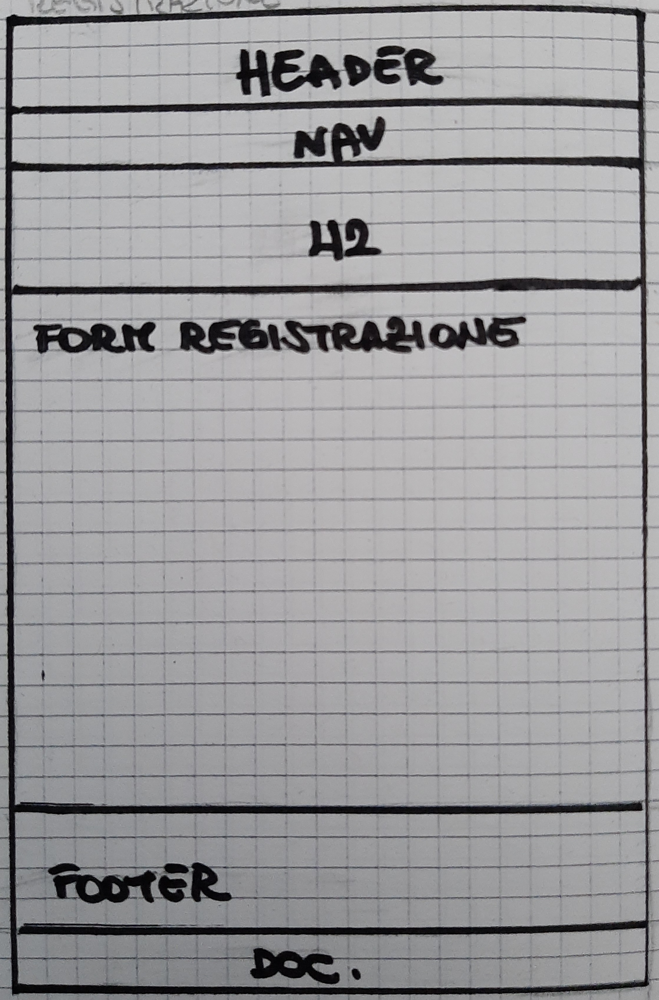
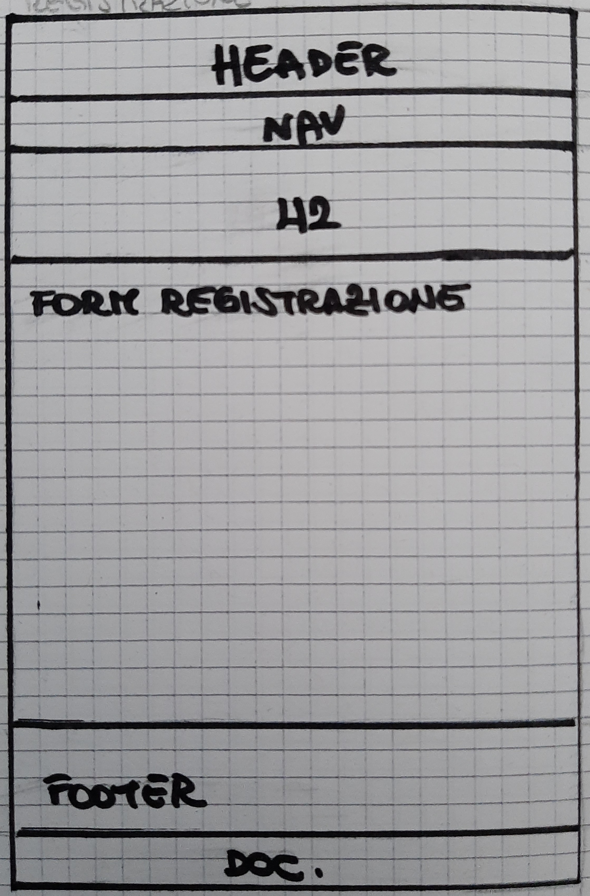

ABSTRACT
Ravers finder nasce dalla mia passione per i grandi festival musicali, incentrati in particolare sull'hard dance. Spesso, durante questi eventi, mi sono ritrovata sola, circondata da una miriade di persone, senza riuscire a contattare i miei amici perchè il volume della musica sovrasta quello della suoneria del cellulare. Ravers finder permette di ritrovare i tuoi amici in mezzo alla folla tramite la geolocalizzazione, senza necessità di chiamate e messaggi.
Il sito è rivolto a tutti gli amanti dei festival musicali, in particolari agli appassionati del genere hard dance e dei grandi festival che si svolgono principalmente in Olanda, cercando di migliorare la loro esperienza. Il valore aggiunto di Ravers finder sta esattamente nella possibilità di trovare gli altri e farsi trovare.
PROJECT MANAGEMENT PLAN
Benchmarking
OBBIETTIVI
Offrire all'utente un servizio che migliori la qualità della sua esperienza al festival
TARGET
Il target a cui è rivolto il mio sito sono principalmente i giovani dai 18 ai 35 anni nonchè fascia media di età che prende parte a questo genere di eventi.
COMPETITORS
Google Maps: permette di condividere con chi si vuole la propria posizione in tempo reale, ma solo tramite messaggio. Non consente di individuare chi si cerca in automatico. Inoltre fornisce la posizione basandosi su una mappa prettamente geografica escludendo di poter scaricare la mappa di un determinato luogo, quale per esempio la mappa di un festival.
L'app "Dov'è": consente di condividere la propria posizione con i propri amici e allo stesso tempo ricevere la loro posizione, ma anche in questo caso si tratta di una posizione basata su una mappa prettamente geografica del territorio.
STRUTTURA E LAYOUT
ARCHITETTURA DEL SITO
WIREFRAME: 1.HOMEPAGE; 2.FUNZIONE; 3.EVENTI; 4.FAQ; 5.LOGIN; 6.REGISTRAZIONE
 

LOOK E FEEL
Le pagine dei siti web dei festival hard dance sono strutturate in maniera chiara e intuitiva per permettere all'utente di trovare in modo rapido le informazioni di cui ha bisogno. Ho cercato di rimanere fedele a questo stile, riducendo al minimo la complessità delle azioni che si possono svolgere sul sito.
Il font utilizzato è un font sans serif che consente una maggiore leggibilità, ho scelto un font semplice, ma facilmente leggibile e non troppo morbido nelle forme riprendendo il genere musicale a cui è riferito il sito.
I colori utilizzati sono colori base quali bianco e nero, tranne per gli elementi attivi, di interazione o per le parole rilevanti, per i quali ho scelto di utilizzare l'arancione. L'arancione è infatti il colore simbolo di questo genere musicale che viene ripreso in particolare durante il Supersized Kingsday, festival olandese che celebra appunto il "Kingday" tingendo l'intero evento di arancione, simbolo della monarchia olandese, diventato poi simbolo del genere musicale in sè.
LINGUAGGI E STRUMENTI
LINGUAGGI
HTML
CSS
TOOLS
Bootstrap
Github
Googlefont
Fontawesome
Google Analytics
COMMUNICATION STRATEGY
BACKGROUND
Esistono, come descritto precedentemente, altri siti che funzionano tramite la geolocalizzazione e permettono di ottenere la posizione fisica di altri e condividere la propria, ma non esiste un sito che permette di fare ciò che la mia idea propone. Le app degli eventi musicali di questo genere propongono spesso la mappa dell'evento stesso, ma sono utilizzate principalmente per orientarsi all'interno del festival e non offrono la possibilità di individuare chi si sta cercando.
OBBIETTIVI COMUNICATIVI
Gli obbiettivi principali del sito web sono dunque, proporre un'idea di come la pagina dovrebbe funzionare, mirando a migliorare l'esperienza dell'utente nonchè partecipante all'evento musicale e cercare anche di promuovere questo genere di eventi, provando ad attirare anche un'audience fino ad ora non interessata.
TARGET AUDIENCE E MESSAGGIO
Il target audience a cui si riferisce Ravers Finder è la fascia di giovani dai 18 ai 35 anni che sono soliti prendere parte a questo genere di eventi; vengono raggiunti tramite la promozione su Instagram e passaparola su Whatsapp. Il target audience secondario è rappresentato dalla fascia over 35, raggiungibile tramite Whatsapp o in alternativa tramite post su Facebook [non in questo caso].
PROMOZIONE
I principali obbiettivi in termini di comunicazione web sono: raggiungere 50 visualizzazioni da parte di utenti singoli e almeno 20 interazioni tramite le storie di instagram [commenti, reazioni, risposte ai sondaggi].
Il sito verrà pubblicizzato tramite passaparola su Whatsapp [ed eventuali sondaggi su Whatsapp] e tramite storie Instragram effettuate dal mio profilo personale e dal profilo creato appositamente per il sito.
VALUTAZIONE DEI RISULTATI
Gli obbiettivi sono stati raggiunti e superati.